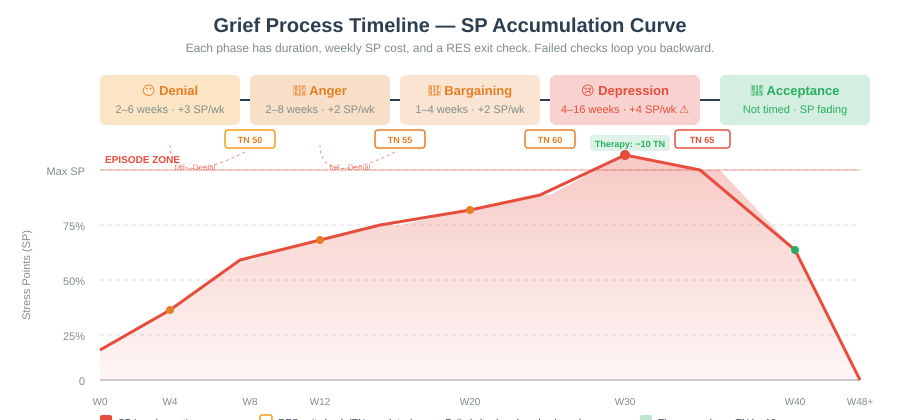
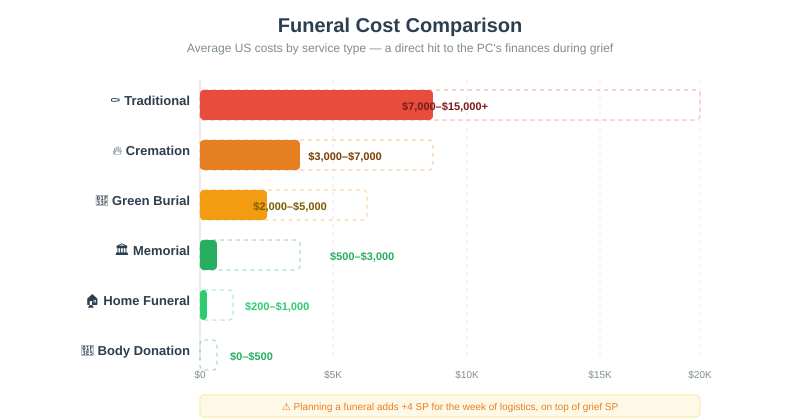
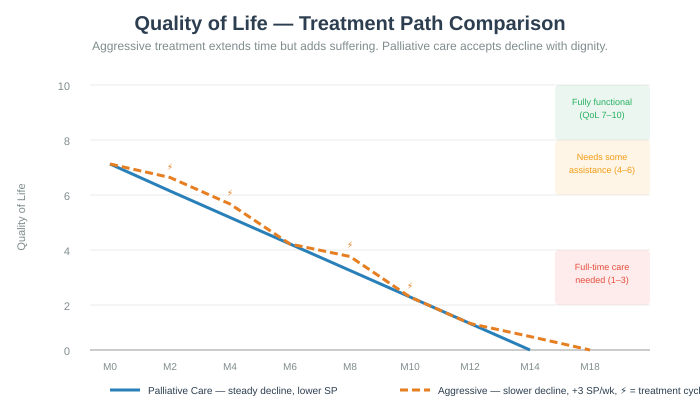
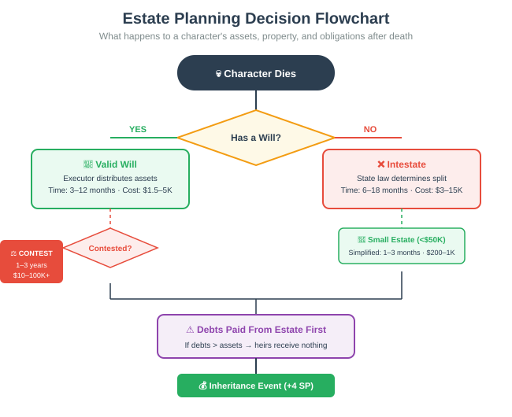
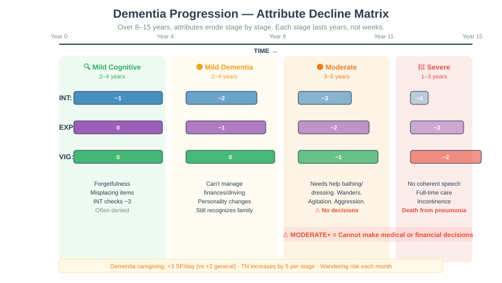
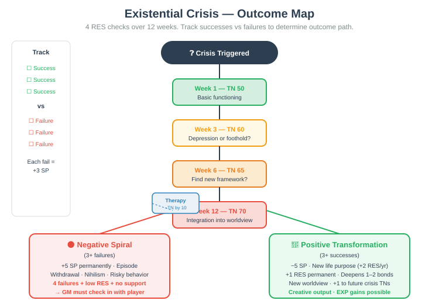

This chapter deals with death, terminal illness, suicide, dementia, and the loss of loved ones — topics that can directly mirror players' real-life grief. Full Lines & Veils conversation required before play. A player may declare "my character was not present" for any death scene. The GM must never force a player to resolve a death event that parallels their own experience. If a player goes red light, the scene ends immediately and the character is treated as having been elsewhere.
Introduction
In most RPGs, death is a failure state — a binary "you're dead, roll a new character." In Reality RPG, death is a process. It happens to NPCs in the character's life, it approaches the character through aging and illness, and when it finally claims the PC, it generates a legacy that can ripple through future campaigns. Grief is not a debuff; it is a mechanical system with duration, stages, and resolution that reflects how humans actually process loss.
This page is organized into eight interconnected systems. You may use them individually or as a full arc spanning decades of play.
1. Death of NPC Loved Ones
When someone the PC cares about dies, the GM triggers a Death Event. The severity depends on the relationship, the circumstances, and the character's emotional investment. All death events begin with an immediate SP load, followed by structured grief phases that unfold over real game time (weeks to years).
1.1 Death Event Types
Sudden Death
accident, heart attack, stroke, homicide
Immediate: +8 SP
Shock: 2–4 weeks disorientation. −5 on INT and EXP checks.
After: 2d10 vs RES (TN 60). Failure = Denial. Success = Anger.
Expected Death
terminal illness, prolonged decline
Immediate: Gradual +2 SP/month (final 3–6 months), then +6 SP at death.
Shock: None (already anticipated). Denial skipped.
After: Grief stages half duration. Bargaining is more intense (+3 SP).
Death of a Child
PC's child, or a child they're close to
Immediate: +12 SP
Shock: 4–8 weeks. −8 on all checks. Auto-fail sleep for 2 weeks.
After: High risk Complicated Grief. 2d10 vs RES (TN 75). Failure = 6–12 months without professional help.
Death by Suicide
loved one took their own life
Immediate: +10 SP
Shock: 3–6 weeks. Guilt phase regardless of stage. −8 on PRC checks.
After: Stigma effects. 2d10 vs EXP (TN 55) to navigate conversations. Failure = social withdrawal 1 month.
Distant Relation
extended family, old friend, colleague
Immediate: +2 SP
Shock: 1–2 weeks mild. −2 on EXP checks.
After: Abbreviated grief. Acceptance in 2–3 months. No Complicated Grief risk.
Mass Casualty Event
disaster, war zone, attack, pandemic
Immediate: +4 SP/person (cap +20). At least +10 SP from event.
Shock: 2–8 weeks. Community support may reduce SP by 50%.
After: PTSD risk: 2d10 vs RES (TN 70). Community ritual = −3 SP.
Double the SP for a spouse or life partner. Add +3 SP if the PC and deceased were co-parents of a living child. Subtract 2 SP if the relationship was estranged or conflicted (grief is still present but mixed with relief, which has its own guilt mechanics).
1.2 Grief Stages as Mechanical Phases
Grief is not linear, but the game models it as sequential phases for mechanical clarity. Each phase has a duration, SP cost per week, and attribute effects. The PC progresses through phases as real time passes and as they make RES checks at the end of each phase.
Denial
2–6 weeks
+3 SP/wk
Anger
2–8 weeks
+2 SP/wk
Bargaining
1–4 weeks
+2 SP/wk
Depression
4–16 weeks
+4 SP/wk ⚠️
Acceptance
Not timed
SP fading
Arrows: Failure on exit check loops you backward (Anger→Denial, Bargaining→Anger, Depression→stays). Therapy reduces Depression TN by 10.

Denial
Duration: 2–6 weeks · Cost: +3 SP/week
Refuses to acknowledge the death. Cannot benefit from social support. Denial behaviors: visiting old places, keeping phone on, setting table for two. INT checks at −3.
Exit: 2d10 vs RES (TN 50). Success → Anger. Failure → stays.
Anger
Duration: 2–8 weeks · Cost: +2 SP/week
Directed at doctors, God, the deceased, self, or the world. PRC checks at −5. Risk of damaging relationships: 2d10 vs PRC (TN 45) each month or one relationship takes a hit.
Exit: 2d10 vs RES (TN 55). Success → Bargaining. Failure → reverts to Denial.
Bargaining
Duration: 1–4 weeks · Cost: +2 SP/week (+3 if expected death)
"If only I had…" guilt spirals. May make extreme life changes (quit job, move, start praying). EXP checks at −3.
Exit: 2d10 vs RES (TN 60). Success → Depression. Failure → cycles back to Anger.
Depression ⚠️
Duration: 4–16 weeks · Cost: +4 SP/week (highest)
The heaviest phase. All checks at −3. VIG checks at −5. May lose 1–2 temporary VIG. Episode risk: if SP exceeds max, trigger mental health Episode.
Exit: 2d10 vs RES (TN 65). Therapy reduces TN by 10.
Acceptance
Duration: Not timed — marks end of active grief · Cost: +1 SP/week (fading)
SP decreases at double rate (−2 SP/night). Penalties lift. PC may hold anniversary pain but functions normally. Character has integrated the loss.
Exit: None. Grief SP reaches 0 over 2–4 weeks.
Maria (RES 7, VIG 6, max SP 25) loses her husband Carlos to a sudden car accident. They were married 12 years, have a 5-year-old daughter.
+8 SP (sudden death) +3 SP (co-parent) = 11 SP. Maria barely functions.
3 weeks shock: −5 INT/EXP, calls in sick. +3 SP/week (Denial) = +9 more. Denial Exit: 2d10 rolls 12 + 7 = 19 vs TN 50 — FAILS. She can't believe Carlos is gone, keeps setting the table for two.
+2 SP/week. Yells at police, doctor, her sister. 2d10 vs PRC (TN 45) — fails. Her sister stops calling for a month.
"If I had made him wear his seatbelt…" +2 SP/week. She starts going to church (she never did before).
+4 SP/week. Maria hits her SP cap of 25 and enters an Episode. She starts therapy (−3 SP/session). VIG drops from 6 to 5 temporarily.
With therapy reducing TN by 10: 2d10 vs RES (TN 55) — rolls 14 + 7 = 21. Success. Maria enters Acceptance. SP halves each night (−2/night).
Maria's grief SP reaches 0. She still feels the loss — she always will — but she is functioning. She has an anniversary marker for the accident date: each year on that date, +3 SP for one week.
1.3 Anniversary and Trigger Events
After reaching Acceptance, certain dates and events can cause grief to resurface temporarily:
1.4 Complicated Grief
Some losses do not resolve through the normal stages. Complicated Grief is a persistent condition that requires intervention. It is most common after the death of a child, sudden violent death, or when the PC has pre-existing mental health conditions.
Diagnosis: If a PC remains stuck in any grief stage for more than 3× the maximum duration (e.g., >48 weeks in Depression), the GM assigns the Complicated Grief flag.
Effects: +2 SP/day (ongoing). All grief-related SP triggers are doubled. PC cannot naturally recover below 10 SP without professional help. Temporary −2 to VIG and INT.
Treatment: Requires at least 6 months of consistent therapy (grief counseling specifically). Each month of therapy: 2d10 vs RES (TN 55). 3 successes = Complicated Grief resolves and PC enters Acceptance. Failure = no change, try again next month.
Medication: Antidepressants may reduce the daily SP cost from +2 to +1 per day but do not directly resolve the condition.
2. Funerals and Memorials
Funerals are not just emotional events — they are expensive, logistically complex social obligations that the PC may need to organize, attend, or both. In the US, the average funeral costs $7,000–$12,000, and this is a direct hit to the PC's finances.
2.1 Funeral Costs

Traditional Funeral
$7,000–$15,000+
Casket ($2K–$10K), embalming, cemetery plot ($1K–$5K), headstone, facility fees
Cremation with Service
$3,000–$7,000
Urn ($50–$500), cremation fee, memorial service venue
Memorial Service Only
$500–$3,000
No body present. Venue rental, catering, flowers
Green / Natural Burial
$2,000–$5,000
Biodegradable casket, conservation burial ground
Home Funeral / Family-Led
$200–$1,000
Legal paperwork, permits, minimal costs. Requires significant family time and emotional labor.
Medical / Body Donation
$0–$500
No ceremony cost. Family may organize a separate memorial.
2.2 Organizing a Funeral
If the PC is the designated organizer (often the spouse, adult child, or next of kin), they face a logistics stress event on top of their grief SP:
- Planning stress: +4 SP for the week of planning. 2d10 vs INT (TN 50) to manage vendors, legal paperwork, and family expectations. Failure = +2 SP and at least one vendor costs 20% more than budgeted.
- Family conflict: 2d10 vs EXP (TN 55) each day of planning. Failure = one family member disputes decisions (casket choice, religious elements, who speaks). Each dispute = +2 SP.
- Time cost: 20–40 hours over 1–2 weeks. This is time not spent working, potentially costing income.
2.3 Attending a Funeral
Even when not organizing, attending a funeral has mechanical effects:
- Time cost: 1–2 days (service + travel + aftermath)
- SP effect: +2 SP for attending (even if the deceased was distant). The social obligation of performing grief is itself stressful.
- Social benefit: 2d10 vs PRC (TN 40) — success = PC gains +1 to one EXP-based social check for the next month (community solidarity, shared experience).
- Consolation spending: Flowers ($50–$100), donation to charity ($20–$100), meals for the family ($100–$300). These are optional but socially expected.
The GM should adapt funeral mechanics to the PC's cultural context. A traditional Jewish shiva involves 7 days of mourning at home with visitors — significant time cost but strong community support (−2 SP from support). A Mexican Día de los Muertos celebration frames death differently — +1 SP for remembrance but potential +2 SP relief from the celebratory framing. A Hindu cremation may involve specific ritual obligations over several days. These variations matter both narratively and mechanically.
3. End-of-Life Care
When a PC's loved one (or the PC themselves) is approaching the end of life, Reality RPG models the practical, financial, and emotional decisions that real families face.
3.1 Advance Directives
Characters should establish advance directives as part of long-term character development. These include:
Living Will
Specifies desired medical treatment if the patient cannot communicate (life support, tube feeding, pain management priorities).
Effect: If present and PC becomes incapacitated, wishes are followed — no additional family conflict SP. If absent: 2d10 vs RES (TN 60) per family member, or +3 SP from decision conflict.
DNR (Do Not Resuscitate)
Prevents CPR and aggressive resuscitation attempts. Allows natural death.
Effect: With DNR, PC dies peacefully if heart stops. Without: 2d10 vs VIG (TN 30) — success = revived but −1 permanent VIG, possible coma. Family gets +5 SP from traumatic resuscitation.
Healthcare Proxy
Designates one person to make medical decisions on the patient's behalf.
Effect: Prevents family conflict. Proxy's choices are final. If proxy makes a choice the PC would not have wanted (no living will exists), +3 SP for PC if conscious enough to perceive it.
3.2 Hospice and Palliative Care
Hospice is end-of-life care focused on comfort rather than cure. It is typically covered by insurance in the last 6 months of life, but out-of-pocket costs and emotional toll are significant.
Home Hospice
$0–$2,000/mo (mostly covered; family pays equipment/modifications)
Family provides 4–12 hrs/day. One member becomes primary caregiver.
Patient: +1 SP/day. Caregiver: +2 SP/day. VIG TN 45 monthly — fail = fatigue (−1 temp VIG, +3 SP).
Hospice Facility
$5,000–$15,000/mo (often partially covered)
Professional staff. Family visits 1–4 hrs/day.
Patient: +1 SP/day (facility discomfort, loss of autonomy). Family: +1 SP/day (guilt, travel stress).
Nursing Home with Palliative Care
$7,000–$12,000/mo
Full-time professional care. Family visits recommended.
Patient: +1 SP/day. Family: +1 SP/day. Lower burden than home care but higher guilt SP for some.
3.3 Family Caregiving Burden
When a family member provides care at home, it is one of the most demanding situations in the game:
Daily cost: +2 SP/day. 4–12 hours of care per day (reduces time for work, relationships, self-care).
Monthly VIG check: 2d10 vs VIG (TN 50). Failure = caregiver fatigue: −1 temporary VIG, +3 SP, and the caregiver must take at least 2 days off or risk a burnout event.
Burnout event: If the caregiver accumulates 3 fatigue markers without rest, they experience burnout: −2 temporary VIG, +8 SP, and they may be medically unable to continue caregiving for 2–4 weeks. This forces an emergency care arrangement (often at significant cost).
Respite care: Hiring help for 1–2 days/week costs $25–$30/hour but prevents burnout. Each respite day = −2 SP for the caregiver.

4. Terminal Illness
A terminal illness diagnosis is one of the most transformative events in the game. It reshapes the character's priorities, relationships, finances, and daily existence.
4.1 The Diagnosis Event
When a PC receives a terminal diagnosis (or an NPC loved one does), the following mechanics activate:
Immediate SP
+8 SP for the diagnosed person. +6 SP for their closest family members.
Shock Check
2d10 vs RES (TN 65). Failure = character enters Denial about their own prognosis, delaying treatment decisions.
Life Reassessment
Within 1 month, character must declare at least one priority shift: a relationship to repair, a dream to pursue, or a conversation to have.
Prognosis Timeline
GM establishes remaining lifespan (months to years). This is a mechanical countdown driving all subsequent decisions.
4.2 Treatment Choices
⚡ Aggressive Treatment
- Chemotherapy, surgery, targeted therapy, clinical trials
- Cost: $10,000–$500,000+ (insurance coverage varies dramatically)
- Quality of life: −2 to all attributes during treatment cycles. Severe side effects (nausea, fatigue, hair loss, infection risk).
- Survival chance: 2d10 vs VIG (TN 60) at 6-month intervals. Each success extends life by 6 months. Each failure = 3 months closer to end.
- SP cost: +3 SP/week during active treatment (pain, fear, treatment side effects).
🕊️ Palliative / Comfort Care
- Pain management, symptom control, quality of life focus
- Cost: $2,000–$10,000/month (often better covered by insurance)
- Quality of life: −1 to VIG only. Character can still engage in meaningful activities.
- Survival: The countdown continues at the natural rate. No extension rolls.
- SP cost: +1 SP/day (awareness of decline, but manageable comfort).
4.3 Quality of Life Tracking
For characters with terminal illness, the GM tracks a Quality of Life (QoL) score from 0–10:
- 10: Fully functional, minimal symptoms
- 7–9: Managing well, occasional bad days
- 4–6: Significant limitations, needs some assistance
- 1–3: Mostly bedbound, needs full-time care
- 0: Final days
QoL decreases by 1 point every 1–3 months (GM's discretion based on illness). Treatment choice affects the rate: aggressive treatment may slow QoL decline by 1 month per roll success but adds weekly SP. Palliative care accepts the natural decline rate but minimizes suffering.

4.4 Saying Goodbye
The GM should offer the player opportunities for closure scenes. These are narrative moments where the character:
- Has important conversations with loved ones
- Writes letters, records videos, or creates messages for the future
- Completes a meaningful project or trip
- Makes peace with people they were estranged from
Each successful closure scene gives the character −2 SP (peace of mind) and grants a Legacy Token that can be used after death (see §5).
David (62, VIG 4, INT 7, RES 6) is diagnosed with pancreatic cancer — 6–12 months. He chooses palliative care. He has a wife (Sandra) and two adult children.
- Month 1: +8 SP. QoL starts at 7. David declares priority shifts: wants to take his daughter to see the ocean (she's never been), wants to tell his son he's proud of him, wants to write letters for his grandchildren's graduations.
- Month 2: QoL = 6. David takes his daughter to Oregon Coast. Closure scene: she cries, they bond. David gains −2 SP and 1 Legacy Token.
- Month 3: QoL = 5. David has the conversation with his son. His son (who'd been distant for years) breaks down. −2 SP, 1 Legacy Token.
- Month 4: QoL = 4. David writes letters. Sandra becomes primary caregiver (+2 SP/day for her). David: +1 SP/day from illness awareness.
- Month 5: QoL = 3. David is mostly bedbound. Sandra's caregiver burnout check: 2d10 vs VIG (TN 50) — fails. She's exhausted. The GM arranges a respite care scene where David's brother steps in for a weekend.
- Month 6: QoL = 1. David's final days. His SP is high but he has made peace. He has 2 Legacy Tokens. When he dies, Sandra receives +6 SP (expected death, spouse), but she also receives 2 Legacy Tokens she can use for herself.
5. Character Death
When a PC dies — whether from old age, accident, illness, or other causes — the game does not simply restart. The character's death has weight, consequence, and legacy.
5.1 How Characters Die
Old Age / Natural Causes
Ages: 75–100+
Cumulative aging reduces VIG to 0, or character reaches natural lifespan. Peaceful, expected.
Survivors: +4 SP (expected death). Less shock, more sadness.
Accident
Ages: Any
Random event. 2d10 vs DXT (TN 75) in dangerous situations. Failure at age <50 = sudden death for survivors.
Survivors: +8 SP (sudden death). Full grief process.
Terminal Illness
Ages: 40–90+
Modeled through terminal illness system (§4). Death occurs when QoL reaches 0.
Survivors: +6 SP (expected death) + relationship modifiers.
Suicide
Ages: Any (peaks 15–25, 45–54)
Only occurs with severe untreated mental health conditions AND multiple failed RES checks over months. GM must handle with extreme sensitivity.
Survivors: +10 SP. Guilt, stigma, complicated grief risk.
Violence / Homicide
Ages: Any
Based on neighborhood safety, lifestyle choices. 2d10 vs DXT (TN 80+ in high-risk areas).
Survivors: +10 SP. May include trauma, anger at perpetrators, legal involvement.
5.2 Legacy Tokens
When a PC dies, the player receives Legacy Tokens based on the character's life achievements and closure scenes:
Earning Legacy Tokens
Closure Scenes
Each completed closure scene = 1 token (max 5)
Major Achievements
Career milestone, degree, home purchase, child raised = 1 token each (max 3)
Strong Social Network
3+ close relationships = 1 bonus token
Estate Planned
Will, advance directives in place = 1 bonus token
Spending Legacy Tokens
Tokens transfer to the player's next character (if connected to the deceased) and can be spent to:
Start with an Advantage
1 token = begin with +$5,000 savings or one skill at trained level
Inherit a Relationship
1 token = new character inherits one existing relationship from the deceased
Moral Clarity
1 token = new character begins with one resolved life question (no existential crisis first year)
Memorial Benefit
1 token = deceased remembered fondly. Once/year invoke memory for +2 on a RES check
5.3 New Character Options After Death
When a PC dies, the player chooses how to continue:
Play Their Child
Create a new character as the deceased's child (or a child of a close NPC). Inherit Legacy Tokens. The deceased's life shaped the new character's starting conditions (wealth, trauma, values, network).
Best for: Long-running campaigns. Continuity. Exploring how one generation's choices affect the next.
Play Their Partner
Create a new character as the deceased's spouse or partner. They carry the grief of the loss. Inherit Legacy Tokens + the shared home/assets. Start with grief SP already loaded.
Best for: Emotional depth. Grief as a starting condition. Shared history enriches the narrative.
Start Fresh
Create an entirely new character with no connection to the deceased. No Legacy Tokens transfer, but the player may choose to carry one thematic lesson forward (a narrative insight, not a mechanical bonus).
Best for: Players who want closure and a clean break. Exploring a completely different life.
Ensemble Shift
In a group game, one player's character dies and the group creates a new character together who enters the remaining characters' lives. The deceased is remembered by the surviving NPCs and PCs.
Best for: Group campaigns where characters are interconnected. Maintains social fabric.
Don't kill a PC lightly. Death should be the culmination of accumulated risk, aging, or illness — not a random punishment. Give the player warning signs, opportunities for prevention, and time to prepare. A well-handled character death is one of the most powerful moments in any RPG campaign.
6. Estate Planning
What happens to a character's money, property, and obligations after death? Estate planning is both a practical mechanic and a narrative opportunity.
6.1 Wills and Inheritance
Valid Will Exists
Executor distributes assets per the will. Heirs receive share after debts paid.
Time: 3–12 months (probate) · Cost: $1,500–$5,000 legal fees
No Will (Intestate)
State law: spouse → children → parents → siblings. No heirs = state takes everything.
Time: 6–18 months · Cost: $3,000–$15,000 court/legal
Contested Will
Heirs dispute validity or distribution. Family conflict guaranteed.
Time: 1–3 years · Cost: $10,000–$100,000+ each side
Small Estate (<$50K)
Simplified probate. Minimal legal involvement.
Time: 1–3 months · Cost: $200–$1,000

6.2 Receiving an Inheritance
When a PC inherits money or property, it is a game event with both positive and negative effects:
Financial benefit: The PC receives the inherited assets (cash, property, investments). This can be life-changing — paying off debt, buying a home, funding education.
Emotional cost: +4 SP at the moment of receiving the inheritance. The money is tainted by loss. 2d10 vs RES (TN 55) — failure = guilt about spending the money, which adds +1 SP/week until the PC either donates 10% of the inheritance or makes a purchase they believe would please the deceased.
Family dynamics: If multiple heirs exist, 2d10 vs EXP (TN 50) for each heir. Failure = conflict over distribution. Each conflict = +3 SP and potential relationship damage.
Debts transfer: The deceased's debts are paid from the estate before distribution. If debts exceed assets, heirs receive nothing and may even face collection harassment if they co-signed anything.
6.3 Debts That Follow Death
Not all obligations end with death:
- Mortgage: If the heir takes over the property, they take on the mortgage. If they don't, the house is sold (often at a loss during probate).
- Credit card debt: Paid from the estate. Heirs are not personally liable unless they co-signed.
- Student loans: Federal loans are discharged at death. Private loans may or may not be (depends on terms).
- Medical debt: Paid from the estate. If the estate is insufficient, the debt generally dies with the patient — but collections may still harass family members who knew about the debt.
- Tax obligations: Final income tax + estate tax (if estate exceeds exemption threshold — $12.92 million federally in 2023, but some states have lower thresholds).
7. Dementia and Alzheimer's
Dementia is not just "forgetting things." It is a progressive, devastating condition that affects the whole family system for years. It deserves its own mechanics because it is one of the most common and impactful end-of-life experiences.
7.1 Disease Progression
Dementia develops in stages over 8–15 years. Each stage affects the character's attributes and capabilities:
Mild Cognitive
2–4 yrs
INT −1
Mild Dementia
2–4 yrs
INT −2 / EXP −1
Moderate
3–6 yrs
INT −3 / EXP −2 / VIG −1
Severe
1–3 yrs
INT −4 / EXP −3 / VIG −2
Mild Cognitive Impairment
Duration: 2–4 years · INT −1
Forgetfulness, misplacing items, repeating questions. INT checks at −3. Often missed or denied entirely.
Mild Dementia
Duration: 2–4 years · INT −2 total / EXP −1
Difficulty with finances, driving. Personality changes begin. Gets lost in familiar places. Still recognizes family.
Moderate Dementia
Duration: 3–6 years · INT −3 / EXP −2 / VIG −1
Needs help with dressing, bathing. May wander. Sleep disturbances. Agitation, aggression. Does not recognize distant family. Cannot make medical or financial decisions.
Severe Dementia
Duration: 1–3 years · INT −4 (effectively 0) / EXP −3 / VIG −2
Cannot speak coherently. Full-time care needed. Incontinence. Swallowing difficulties. Bedbound in later stages. Death usually from pneumonia or infection.

7.2 Caregiver Mechanics for Dementia
Caring for someone with dementia is widely considered the most demanding caregiving situation:
Daily burden: +3 SP/day (vs. +2 SP/day for general caregiving). Dementia care is more intense due to behavioral symptoms, safety concerns, and the emotional toll of watching someone you love "die twice" — first their personality, then their body.
Monthly checks:
- 2d10 vs VIG (TN 55): Failure = caregiver fatigue (−1 temp VIG, +3 SP). TN increases by 5 each stage of dementia severity.
- 2d10 vs RES (TN 50): Failure = caregiver emotional erosion. The caregiver experiences grief for the living person — mourning who they were while they're still here. +2 SP permanently (does not recover until the person dies).
Wandering risk: In Moderate+ stages, 2d10 (TN 40) each month. Failure = the person wanders and must be found. Each wandering event = +5 SP for the caregiver and potential emergency services involvement.
Sundowning: In Moderate+ stages, the person becomes agitated in late afternoon/evening. +2 SP for the caregiver each evening during this period. No mitigation except professional care.
7.3 Long-Term Care Costs
In-Home Care (Full-Time Aide)
$80,000–$100,000/year
Requires home modifications. Family still provides oversight and emotional care.
Memory Care Facility
$70,000–$100,000/year
Specialized dementia care. More secure than standard nursing homes. Waitlists common.
Standard Nursing Home
$50,000–$80,000/year
Many not equipped for dementia behaviors. Higher risk of abuse/neglect.
Adult Day Care
$15,000–$35,000/year
Part-day supervision. Family provides care evenings/weekends. Good bridge option.
Family-Only Care
$0 direct cost, enormous indirect cost
One family member often quits/reduces work. Lost income typically $30K–$60K/year. Plus caregiver health impacts.
7.4 Family Impact
Dementia reshapes the entire family system:
- Relationship strain: Siblings often disagree about care decisions. 2d10 vs EXP (TN 55) per sibling. Failure = one sibling becomes the "designated caregiver" against their will, breeding resentment.
- Spousal impact: A spouse caring for their partner with dementia has a 50% higher mortality rate in real life. In-game: spouse caregiver has +1 SP/day (total +4 SP/day) and fails their monthly VIG check at TN 60 instead of 55.
- Adult children's guilt: Adult children who don't provide direct care experience +2 SP/month from guilt. Those who do provide care experience +3 SP/month from burden. There is no winning.
- Financial drain: Even with insurance, dementia care typically drains a family's savings within 3–5 years. The GM should track the family's financial decline as a parallel storyline.
Mr. Chen (72, INT 7, EXP 8, VIG 5) is diagnosed with early-stage Alzheimer's. His wife (Mrs. Chen, 68) and two adult children (daughter Mei, 45; son Kevin, 42) are the primary family.
- Year 1–2 (Mild): Mr. Chen loses 1 INT. Forgets appointments, repeats himself. Mrs. Chen covers for him. +1 SP/day for her. Mei visits weekly (+1 SP/visit). Kevin lives across the country, calls monthly.
- Year 3–5 (Mild Dementia): Mr. Chen at −2 INT, −1 EXP. Can no longer manage finances. Mei takes over his banking. Kevin argues they should put him in a facility. Mei refuses — "he's my father, I won't abandon him." 2d10 vs EXP (TN 55) — Kevin fails. Family conflict: +3 SP for everyone involved.
- Year 6–9 (Moderate): Mr. Chen at −3 INT, −2 EXP, −1 VIG. Needs help bathing, dressing. Wanders at night. Mrs. Chen is now at +3 SP/day as primary caregiver. She fails her VIG check in month 4 — fatigued, losing weight. Mei moves closer to help. Kevin sends money ($3,000/month toward in-home aide) but still lives far away. Mei's guilt SP = +2/month. Mrs. Chen's emotional erosion check fails twice — she's grieving the husband she's losing.
- Year 10–12 (Severe): Mr. Chen bedbound. Incontinence. Swallowing issues. The family finally agrees on a memory care facility ($85,000/year). Mr. Chen's savings are depleted. Kevin and Mei use their inheritance fund. Mrs. Chen visits daily but her SP load drops to +1/day (professional care reduces burden). She still has permanent +4 SP from emotional erosion that won't recover until Mr. Chen dies.
- Year 13: Mr. Chen dies from pneumonia. Mrs. Chen receives +4 SP (expected death, spouse). Her total SP spikes but the permanent erosion markers clear. She enters grief stages but with shorter durations (she's been grieving for 13 years — this is a release, not just a loss).
8. Existential Crisis
An existential crisis is a narrative event triggered by confronting mortality, meaninglessness, or the weight of existence itself. It can be triggered by a loved one's death, a terminal diagnosis, reaching a certain age, a spiritual experience, or simply the cumulative weight of life.
8.1 Triggering an Existential Crisis
The GM may call for an existential crisis event when:
- A close loved one dies and the PC is left questioning the meaning of their own life
- The PC reaches a major age milestone (40, 50, 60) and experiences a midlife or late-life reckoning
- The PC survives a near-death experience
- The PC's life has accumulated >30 SP total over the campaign without adequate resolution
- The PC has lost their primary life purpose (career ends, children leave, spouse dies)
8.2 The Crisis Check
When an existential crisis event triggers, the PC makes a series of RES checks over the course of weeks or months:
All checks: 2d10 vs RES. Each failure adds +3 SP. 3+ failures = negative spiral. 3+ successes = positive transformation. Therapy can reduce effective TN.
8.3 Outcomes
🌑 Negative Spiral (3+ failures)
- Depression: +5 SP permanently. Enter an Episode. May develop a clinical depression condition.
- Withdrawal: PC isolates from social connections. Lose 1–2 relationships. EXP checks at −5.
- Nihilism: Character believes nothing matters. All PRC checks at −3 (apathy, inability to connect). May neglect basic self-care (−1 VIG).
- Risky behavior: Character engages in substance abuse, reckless spending, or other self-destructive coping. 2d10 vs RES (TN 40) each month or a new negative event occurs.
- Suicidal ideation: In extreme cases (4 failures, low RES, no social support), the GM must check in with the player outside of play. This is not a game mechanic to push through — it is a real conversation about whether the player wants to continue.
🌟 Positive Transformation (3+ successes)
- Clarity: −5 SP. Character gains a new life purpose — a declared goal that provides +2 to RES checks for the next year.
- Depth: +1 to RES (permanent). The character has grown through the crisis. They are more resilient.
- Reconnection: Character deepens 1–2 existing relationships. Gains +1 EXP in those connections.
- Spiritual/philosophical framework: Character adopts a new worldview (religious, secular humanist, nature-connected, etc.) that provides ongoing resilience. +1 to all future existential crisis TNs (they now have a framework).
- Creative output: Character channels the crisis into art, writing, volunteering, or activism. This provides narrative richness and potential EXP gains.
James (50, RES 5, INT 6, EXP 7) is a mid-level accountant whose wife left him 6 months ago, whose father died 2 months ago, and who just found out his company is automating his role. The cumulative weight triggers an existential crisis.
2d10 vs RES (TN 50) — rolls 8 + 5 = 13. Can't sleep. Stares at the ceiling at 3 AM wondering what any of it is for.
2d10 vs RES (TN 60) — rolls 15 + 5 = 20. Stops going to the gym. Drinks more. Best friend calls — James doesn't answer.
2d10 vs RES (TN 65) — rolls 9 + 5 = 14. 3 failures. The GM describes James sitting in his car in a grocery store parking lot, unable to go inside, unable to go home.
Sister shows up, sits with him (strong social support: −2 SP). Therapy arc: 4 sessions × −3 SP = −12 SP. SP drops to 6.
2d10 vs RES (TN 70, therapy-reduced) — rolls 11 + 5 = 16. Fails raw, but counts as soft success. No dramatic revelation — a quiet one. Starts volunteering at a food bank. Doesn't get wife back. Doesn't get job back. But finds something that matters. +1 RES (now 6). The crisis resolves — not with a bang, but with a beginning.
8.4 Existential Crisis as a Recurring Theme
Characters who successfully navigate an existential crisis are not immune to future ones. Each crisis makes the next one slightly easier (−5 to all TNs for future crises) but the triggers become more nuanced. A character who has faced mortality once may find that a friend's cancer diagnosis, their own aging body, or a child's departure from home triggers another reckoning — but this time they have tools.

Summary: The Death & Grief Quick Reference
Sudden Death
+8 SP — Shock phase → grief stages
Expected Death
+2 SP/mo → +6 SP — Skips Denial, shorter stages
Death of a Child
+12 SP — Complicated Grief risk (TN 75)
Suicide of Loved One
+10 SP — Guilt phase, stigma, PRC penalties
Funeral Organization
+4 SP — INT TN 50, $3K–$15K cost
Home Caregiving
+2 SP/day (general) / +3 SP/day (dementia) — Monthly VIG check for burnout
Terminal Diagnosis
+8 SP (patient) / +6 SP (family) — QoL tracking, treatment choice
Dementia Onset
Progressive INT/EXP/VIG loss — 4 stages over 8–15 years
Existential Crisis
+3 SP/week — 4 RES checks over 12 weeks
Inheritance Received
+4 SP — RES TN 55 or guilt SP
Death and grief are the hardest topics to game. Your job as GM is not to make players feel bad — it is to give their characters meaningful emotional arcs that honor the reality of human experience. A well-run grief arc is not about suffering; it is about showing how people love, how they lose, and how they continue. That is what makes Reality RPG different. That is what makes it real.